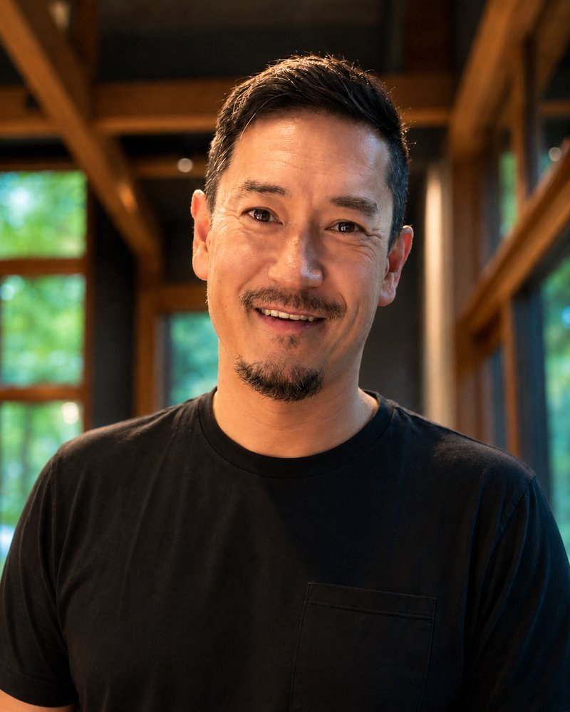

Character & Simulation TA · Applied-AI Engineer
For 25 years I've rigged and simulated believable digital characters: faces, bodies, cloth, and hair for feature film and AAA games. Today I build applied-AI agents and the evaluation systems that keep them reliable.

Two decades of character rigging and simulation, from cinematics to feature VFX.
Character rigging & simulation craft: cloth, hair, skin.
DreamWorks features & digital-human facial work on The Matrix sequels.
The craft of believable characters is now a bridge to reliable AI.
For 25 years I've built the systems behind believable digital characters: digital-human facial work on The Matrix sequels; hero-character cloth, hair, and skin across eight DreamWorks features; Rigging & Simulation Lead on Blizzard cinematics, covering full character and facial rigging plus hair & cloth; and real-time avatar systems at Meta (Avatars & Horizon).
That craft is now a bridge. I bring the same physics intuition and obsession with quality to applied AI: agent systems, retrieval pipelines, and the self-improving evaluation harnesses that keep them honest. Shipping simulation for film and games taught me what quality looks like frame by frame, and that's the bar I hold generative systems to.
Building autonomous systems that stay measurable, verifiable, and honest; the same rigor I'd bring to your agent and evaluation infrastructure.
Agent Systems & Evaluation
My specialty: self-improving evaluation harnesses for agentic AI. A 15-question eval matrix drove 200+ iterations on a 50+-user production system, with orchestration that keeps agents measurable, verifiable, and honest.
Open Source
mainframe-mcp, a GPU-accelerated MCP + RAG knowledge server: Qwen3 embeddings, native reranking, hybrid search, ambient memory. Its in-repo eval harness measured +26% / +33% retrieval gains.
Architecture note →Claude Oracle
Claude Oracle, a multi-tier research orchestrator for Claude Code. A structured Haiku / Sonnet / Opus hierarchy fans breadth-first search across parallel Haiku scouts, has Sonnet synthesize, and returns one briefing to the Opus session: roughly 10x the research breadth at a fraction of Opus-only cost. Open-source (MIT).
Architecture note →Generative & Multimodal
Diffusion LoRA fine-tuning and evaluation (FLUX) with structured quality rubrics, including a FLUX.2 pipeline that turns text into installable fonts, scored against held-out sets. Plus voice-first multimodal pipelines.
Much of my applied-AI work lives behind NDAs: agentic pipelines and physics-ML training data at Meta, plus several private production systems. Glad to walk through it in depth.
Feature film, AAA games, and the pipelines that shipped them.
Feature Film
Digital-human facial capture for The Matrix sequels, presented at SIGGRAPH 2004 ("Making of The Superpunch") · hero-character cloth/hair/skin across 8 DreamWorks features.
AAA Games
Rigging & Simulation Lead on Blizzard cinematics: full character and facial rigging plus hair & cloth simulation across World of Warcraft, Overwatch, Diablo, Heroes of the Storm, and Hearthstone.
Real-Time to ML
Meta Avatars & Horizon: real-time avatar cloth & hair motion, supporting runtime animation and simulation graphs, plus 100 character rigs authored as training data for a physics-based ML rigging model.
Pipeline & Tools
Two decades of artist tooling: PyQt tools for a modular rigging/simulation build system at Blizzard, and core Python tools for DreamWorks character FX. Production Python & C++.